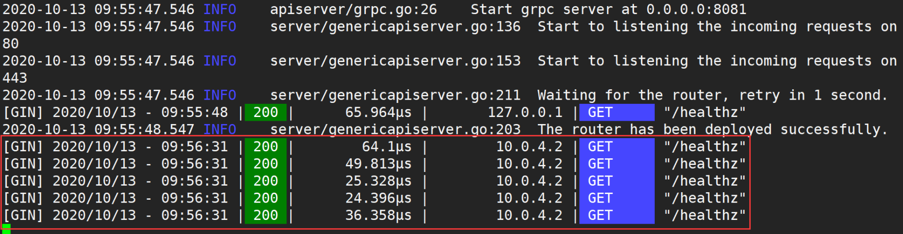
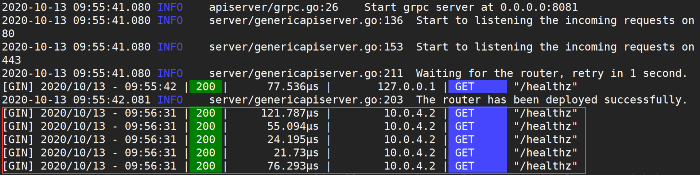
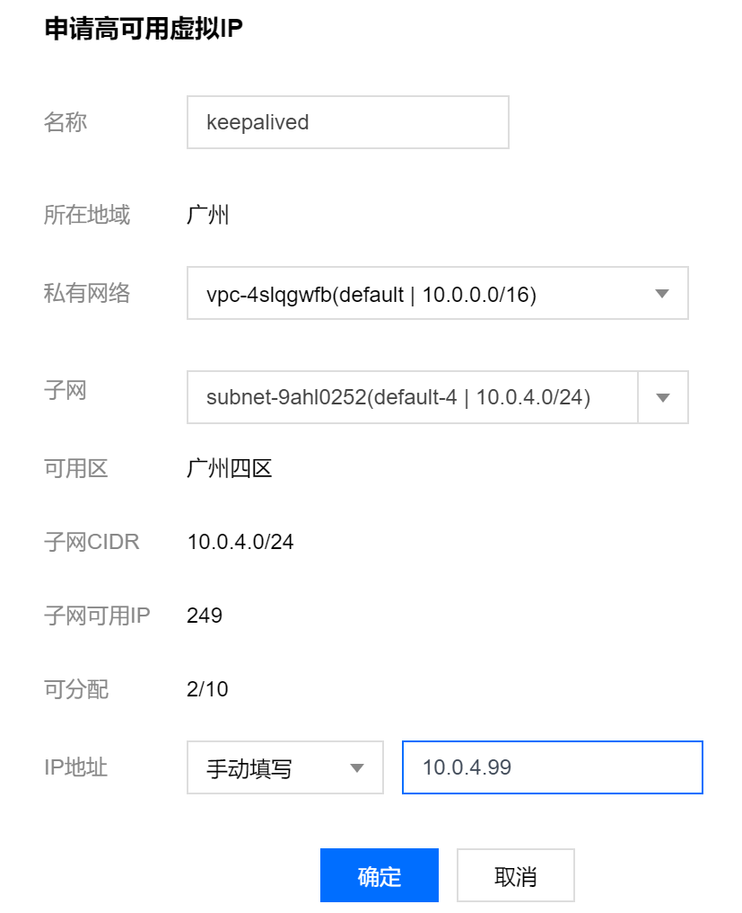
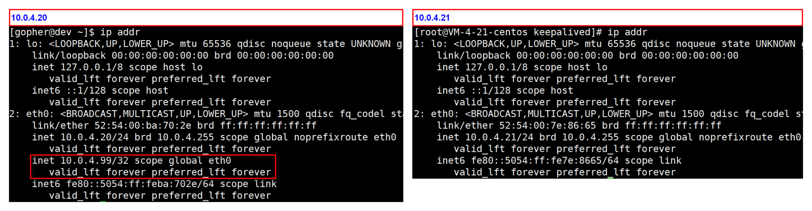
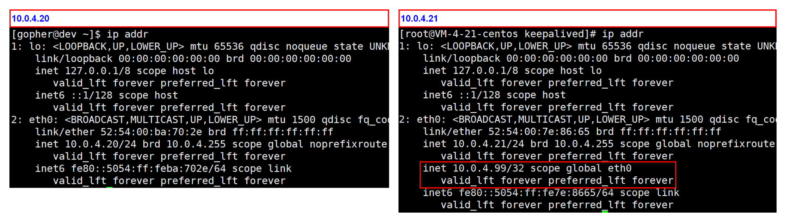
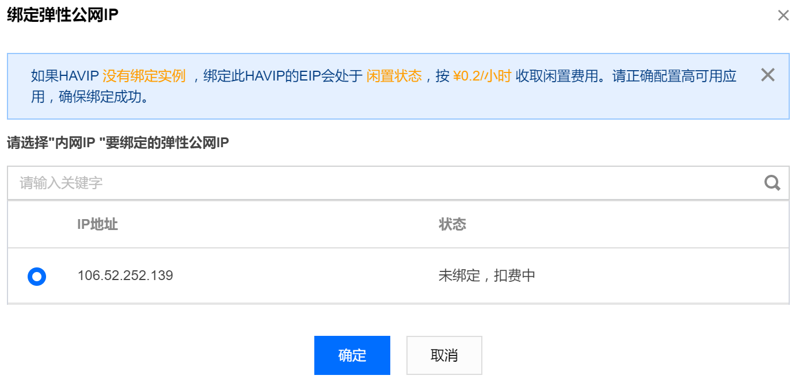

- 00 开篇词 从 0 开始搭建一个企业级 Go 应用.md.html
- 01 IAM系统概述：我们要实现什么样的 Go 项目？.md.html
- 02 环境准备：如何安装和配置一个基本的 Go 开发环境？.md.html
- 03 项目部署：如何快速部署 IAM 系统？.md.html
- 04 规范设计（上）：项目开发杂乱无章，如何规范？.md.html
- 05 规范设计（下）：commit 信息风格迥异、难以阅读，如何规范？.md.html
- 06 目录结构设计：如何组织一个可维护、可扩展的代码目录？.md.html
- 07 工作流设计：如何设计合理的多人开发模式？.md.html
- 08 研发流程设计（上）：如何设计 Go 项目的开发流程？.md.html
- 09 研发流程设计（下）：如何管理应用的生命周期？.md.html
- 10 设计方法：怎么写出优雅的 Go 项目？.md.html
- 11 设计模式：Go常用设计模式概述.md.html
- 12 API 风格（上）：如何设计RESTful API？.md.html
- 13 API 风格（下）：RPC API介绍.md.html
- 14 项目管理：如何编写高质量的Makefile？.md.html
- 15 研发流程实战：IAM项目是如何进行研发流程管理的？.md.html
- 16 代码检查：如何进行静态代码检查？.md.html
- 17 API 文档：如何生成 Swagger API 文档 ？.md.html
- 18 错误处理（上）：如何设计一套科学的错误码？.md.html
- 19 错误处理（下）：如何设计错误包？.md.html
- 20 日志处理（上）：如何设计日志包并记录日志？.md.html
- 21 日志处理（下）：手把手教你从 0 编写一个日志包.md.html
- 22 应用构建三剑客：Pflag、Viper、Cobra 核心功能介绍.md.html
- 23 应用构建实战：如何构建一个优秀的企业应用框架？.md.html
- 24 Web 服务：Web 服务核心功能有哪些，如何实现？.md.html
- 25 认证机制：应用程序如何进行访问认证？.md.html
- 26 IAM项目是如何设计和实现访问认证功能的？.md.html
- 27 权限模型：5大权限模型是如何进行资源授权的？.md.html
- 28 控制流（上）：通过iam-apiserver设计，看Web服务的构建.md.html
- 29 控制流（下）：iam-apiserver服务核心功能实现讲解.md.html
- 30 ORM：CURD 神器 GORM 包介绍及实战.md.html
- 31 数据流：通过iam-authz-server设计，看数据流服务的设计.md.html
- 32 数据处理：如何高效处理应用程序产生的数据？.md.html
- 33 SDK 设计（上）：如何设计出一个优秀的 Go SDK？.md.html
- 34 SDK 设计（下）：IAM项目Go SDK设计和实现.md.html
- 35 效率神器：如何设计和实现一个命令行客户端工具？.md.html
- 36 代码测试（上）：如何编写 Go 语言单元测试和性能测试用例？.md.html
- 37 代码测试（下）：Go 语言其他测试类型及 IAM 测试介绍.md.html
- 38 性能分析（上）：如何分析 Go 语言代码的性能？.md.html
- 39 性能分析（下）：API Server性能测试和调优实战.md.html
- 40 软件部署实战（上）：部署方案及负载均衡、高可用组件介绍.md.html
- 41 软件部署实战（中）：IAM 系统生产环境部署实战.md.html
- 42 软件部署实战（下）：IAM系统安全加固、水平扩缩容实战.md.html
- 43 技术演进（上）：虚拟化技术演进之路.md.html
- 44 技术演进（下）：软件架构和应用生命周期技术演进之路.md.html
- 45 基于Kubernetes的云原生架构设计.md.html
- 46 如何制作Docker镜像？.md.html
- 47 如何编写Kubernetes资源定义文件？.md.html
- 48 IAM 容器化部署实战.md.html
- 49 服务编排（上）：Helm服务编排基础知识.md.html
- 50 服务编排（下）：基于Helm的服务编排部署实战.md.html
- 51 基于 GitHub Actions 的 CI 实战.md.html
- 特别放送 Go Modules依赖包管理全讲.md.html
- 特别放送 Go Modules实战.md.html
- 特别放送 IAM排障指南.md.html
- 特别放送 分布式作业系统设计和实现.md.html
- 特别放送 给你一份Go项目中最常用的Makefile核心语法.md.html
- 特别放送 给你一份清晰、可直接套用的Go编码规范.md.html
- 直播加餐 如何从小白进阶成 Go 语言专家？.md.html
- 结束语 如何让自己的 Go 研发之路走得更远？.md.html
- 捐赠
41 软件部署实战（中）：IAM 系统生产环境部署实战
你好，我是孔令飞。
上一讲，我介绍了IAM部署用到的两个核心组件，Nginx和Keepalived。那么这一讲，我们就来看下，如何使用Nginx和Keepalived来部署一个高可用的IAM应用。下一讲，我再介绍下IAM应用安全和弹性伸缩能力的构建方式。
这一讲，我们会通过下面四个步骤来部署IAM应用：
- 在服务器上部署IAM应用中的服务。
- 配置Nginx，实现反向代理功能。通过反向代理，我们可以通过Nginx来访问部署在内网的IAM服务。
- 配置Nginx，实现负载均衡功能。通过负载均衡，我们可以实现服务的水平扩缩容，使IAM应用具备高可用能力。
- 配置Keepalived，实现Nginx的高可用。通过Nginx + Keepalived的组合，可以实现整个应用架构的高可用。
部署IAM应用
部署一个高可用的IAM应用，需要至少两个节点。所以，我们按照先后顺序，分别在10.0.4.20和10.0.4.21服务器上部署IAM应用。
在10.0.4.20服务器上部署IAM应用
首先，我来介绍下如何在10.0.4.20服务器上部署IAM应用。
我们要在这个服务器上部署如下组件：
- iam-apiserver
- iam-authz-server
- iam-pump
- MariaDB
- Redis
- MongoDB
这些组件的部署方式，03讲 有介绍，这里就不再说明。
此外，我们还需要设置MariaDB，给来自于10.0.4.21服务器的数据库连接授权，授权命令如下：
$ mysql -hlocalhost -P3306 -uroot -proot # 先以root用户登陆数据库
MariaDB [(none)]> grant all on iam.* TO [email protected] identified by 'iam1234';
Query OK, 0 rows affected (0.000 sec)
MariaDB [(none)]> flush privileges;
Query OK, 0 rows affected (0.000 sec)
在10.0.4.21服务器上部署IAM应用
然后，在10.0.4.21服务器上安装好iam-apiserver、iam-authz-server 和 iam-pump。这些组件通过10.0.4.20 IP地址，连接10.0.4.20服务器上的MariaDB、Redis和MongoDB。
配置Nginx作为反向代理
假定要访问的API Server和IAM Authorization Server的域名分别为iam.api.marmotedu.com和iam.authz.marmotedu.com，我们需要分别为iam-apiserver和iam-authz-server配置Nginx反向代理。整个配置过程可以分为5步（在10.0.4.20服务器上操作）。
第一步，配置iam-apiserver。
新建Nginx配置文件/etc/nginx/conf.d/iam-apiserver.conf，内容如下：
server {
listen 80;
server_name iam.api.marmotedu.com;
root /usr/share/nginx/html;
location / {
proxy_set_header X-Forwarded-Host $http_host;
proxy_set_header X-Real-IP $remote_addr;
proxy_set_header X-Forwarded-For $proxy_add_x_forwarded_for;
proxy_pass http://127.0.0.1:8080/;
client_max_body_size 5m;
}
error_page 404 /404.html;
location = /40x.html {
}
error_page 500 502 503 504 /50x.html;
location = /50x.html {
}
}
有几点你在配置时需要注意，这里说明下。
server_name需要为iam.api.marmotedu.com，我们通过iam.api.marmotedu.com访问iam-apiserver。- iam-apiserver默认启动的端口为
8080。 - 由于Nginx默认允许客户端请求的最大单文件字节数为
1MB，实际生产环境中可能太小，所以这里将此限制改为5MB（client_max_body_size 5m）。如果需要上传图片之类的，可能需要设置成更大的值，比如50m。 - server_name用来说明访问Nginx服务器的域名，例如
curl -H 'Host: iam.api.marmotedu.com' http://x.x.x.x:80/healthz，x.x.x.x为Nginx服务器的IP地址。 - proxy_pass表示反向代理的路径。因为这里是本机的iam-apiserver服务，所以IP为
127.0.0.1。端口要和API服务端口一致，为8080。
最后还要提醒下，因为 Nginx 配置选项比较多，跟实际需求和环境有关，所以这里的配置是基础的、未经优化的配置，在实际生产环境中需要你再做调节。
第二步，配置iam-authz-server。
新建Nginx配置文件/etc/nginx/conf.d/iam-authz-server.conf，内容如下：
server {
listen 80;
server_name iam.authz.marmotedu.com;
root /usr/share/nginx/html;
location / {
proxy_set_header X-Forwarded-Host $http_host;
proxy_set_header X-Real-IP $remote_addr;
proxy_set_header X-Forwarded-For $proxy_add_x_forwarded_for;
proxy_pass http://127.0.0.1:9090/;
client_max_body_size 5m;
}
error_page 404 /404.html;
location = /40x.html {
}
error_page 500 502 503 504 /50x.html;
location = /50x.html {
}
}
下面是一些配置说明。
- server_name需要为
iam.authz.marmotedu.com，我们通过iam.authz.marmotedu.com访问iam-authz-server。 - iam-authz-server默认启动的端口为
9090。 - 其他配置跟
/etc/nginx/conf.d/iam-apiserver.conf一致。
第三步，配置完Nginx后，重启Nginx：
$ sudo systemctl restart nginx
第四步，在/etc/hosts中追加下面两行：
127.0.0.1 iam.api.marmotedu.com
127.0.0.1 iam.authz.marmotedu.com
第五步，发送HTTP请求：
$ curl http://iam.api.marmotedu.com/healthz
{"status":"ok"}
$ curl http://iam.authz.marmotedu.com/healthz
{"status":"ok"}
我们分别请求iam-apiserver和iam-authz-server的健康检查接口，输出了{"status":"ok"}，说明我们可以成功通过代理访问后端的API服务。
在用curl请求http://iam.api.marmotedu.com/healthz后，后端的请求流程实际上是这样的：
- 因为在
/etc/hosts中配置了127.0.0.1 iam.api.marmotedu.com，所以请求http://iam.api.marmotedu.com/healthz实际上是请求本机的Nginx端口（127.0.0.1:80）。 - Nginx在收到请求后，会解析请求，得到请求域名为
iam.api.marmotedu.com。根据请求域名去匹配 Nginx的server配置，匹配到server_name iam.api.marmotedu.com;配置。 - 匹配到server后，把请求转发到该server的
proxy_pass路径。 - 等待API服务器返回结果，并返回客户端。
配置Nginx作为负载均衡
这门课采用Nginx轮询的负载均衡策略转发请求。负载均衡需要至少两台服务器，所以会分别在10.0.4.20和10.0.4.21服务器上执行相同的操作。下面我分别来介绍下如何配置这两台服务器，并验证配置是否成功。
10.0.4.20服务器配置
登陆10.0.4.20服务器，在/etc/nginx/nginx.conf中添加upstream配置，配置过程可以分为3步。
第一步，在/etc/nginx/nginx.conf中添加upstream：
http {
log_format main '$remote_addr - $remote_user [$time_local] "$request" '
'$status $body_bytes_sent "$http_referer" '
'"$http_user_agent" "$http_x_forwarded_for"';
access_log /var/log/nginx/access.log main;
sendfile on;
tcp_nopush on;
tcp_nodelay on;
keepalive_timeout 65;
types_hash_max_size 2048;
include /etc/nginx/mime.types;
default_type application/octet-stream;
# Load modular configuration files from the /etc/nginx/conf.d directory.
# See http://nginx.org/en/docs/ngx_core_module.html#include
# for more information.
include /etc/nginx/conf.d/*.conf;
upstream iam.api.marmotedu.com {
server 127.0.0.1:8080
server 10.0.4.21:8080
}
upstream iam.authz.marmotedu.com {
server 127.0.0.1:9090
server 10.0.4.21:9090
}
}
配置说明：
- upstream是配置在
/etc/nginx/nginx.conf文件中的http{ … }部分的。 - 因为我们要分别为iam-apiserver和iam-authz-server配置负载均衡，所以我们创建了两个upstream，分别是
iam.api.marmotedu.com和iam.authz.marmotedu.com。为了便于识别，upstream名称和域名最好保持一致。 - 在upstream中，我们需要分别添加所有的iam-apiserver和iam-authz-server的后端（
ip:port），本机的后端为了访问更快，可以使用127.0.0.1:<port>，其他机器的后端，需要使用<内网>:port，例如10.0.4.21:8080、10.0.4.21:9090。
第二步，修改proxy_pass。
修改/etc/nginx/conf.d/iam-apiserver.conf文件，将proxy_pass修改为：
proxy_pass http://iam.api.marmotedu.com/;
修改/etc/nginx/conf.d/iam-authz-server.conf文件，将proxy_pass修改为：
proxy_pass http://iam.authz.marmotedu.com/;
当Nginx转发到http://iam.api.marmotedu.com/域名时，会从iam.api.marmotedu.com upstream配置的后端列表中，根据负载均衡策略选取一个后端，并将请求转发过去。转发http://iam.authz.marmotedu.com/域名的逻辑也一样。
第三步，配置完Nginx后，重启Nginx：
$ sudo systemctl restart nginx
最终配置好的配置文件，你可以参考下面这些（保存在configs/ha/10.0.4.20目录下）：
- nginx.conf：configs/ha/10.0.4.20/nginx.conf。
- iam-apiserver.conf：configs/ha/10.0.4.20/iam-apiserver.conf。
- iam-authz-server.conf：configs/ha/10.0.4.20/iam-authz-server.conf。
10.0.4.21服务器配置
登陆10.0.4.21服务器，在/etc/nginx/nginx.conf中添加upstream配置。配置过程可以分为下面4步。
第一步，在/etc/nginx/nginx.conf中添加upstream：
http {
log_format main '$remote_addr - $remote_user [$time_local] "$request" '
'$status $body_bytes_sent "$http_referer" '
'"$http_user_agent" "$http_x_forwarded_for"';
access_log /var/log/nginx/access.log main;
sendfile on;
tcp_nopush on;
tcp_nodelay on;
keepalive_timeout 65;
types_hash_max_size 2048;
include /etc/nginx/mime.types;
default_type application/octet-stream;
# Load modular configuration files from the /etc/nginx/conf.d directory.
# See http://nginx.org/en/docs/ngx_core_module.html#include
# for more information.
include /etc/nginx/conf.d/*.conf;
upstream iam.api.marmotedu.com {
server 127.0.0.1:8080
server 10.0.4.20:8080
}
upstream iam.authz.marmotedu.com {
server 127.0.0.1:9090
server 10.0.4.20:9090
}
}
upstream中，需要配置10.0.4.20服务器上的iam-apiserver和iam-authz-server的后端，例如10.0.4.20:8080、10.0.4.20:9090。
第二步，创建/etc/nginx/conf.d/iam-apiserver.conf文件（iam-apiserver的反向代理+负载均衡配置），内容如下：
server {
listen 80;
server_name iam.api.marmotedu.com;
root /usr/share/nginx/html;
location / {
proxy_set_header X-Forwarded-Host $http_host;
proxy_set_header X-Real-IP $remote_addr;
proxy_set_header X-Forwarded-For $proxy_add_x_forwarded_for;
proxy_pass http://iam.api.marmotedu.com/;
client_max_body_size 5m;
}
error_page 404 /404.html;
location = /40x.html {
}
error_page 500 502 503 504 /50x.html;
location = /50x.html {
}
}
第三步，创建/etc/nginx/conf.d/iam-authz-server文件（iam-authz-server的反向代理+负载均衡配置），内容如下：
server {
listen 80;
server_name iam.authz.marmotedu.com;
root /usr/share/nginx/html;
location / {
proxy_set_header X-Forwarded-Host $http_host;
proxy_set_header X-Real-IP $remote_addr;
proxy_set_header X-Forwarded-For $proxy_add_x_forwarded_for;
proxy_pass http://iam.authz.marmotedu.com/;
client_max_body_size 5m;
}
error_page 404 /404.html;
location = /40x.html {
}
error_page 500 502 503 504 /50x.html;
location = /50x.html {
}
}
第四步，配置完Nginx后，重启Nginx：
$ sudo systemctl restart nginx
最终配置好的配置文件，你可以参考下面这些（保存在configs/ha/10.0.4.21目录下）：
- nginx.conf：configs/ha/10.0.4.21/nginx.conf。
- iam-apiserver.conf：configs/ha/10.0.4.21/iam-apiserver.conf。
- iam-authz-server.conf：configs/ha/10.0.4.21/iam-authz-server.conf。
测试负载均衡
上面，我们配置了Nginx负载均衡器，这里我们还需要测试下是否配置成功。
第一步，执行测试脚本（test/nginx/loadbalance.sh）：
#!/usr/bin/env bash
for domain in iam.api.marmotedu.com iam.authz.marmotedu.com
do
for n in $(seq 1 1 10)
do
echo $domain
nohup curl http://${domain}/healthz &>/dev/null &
done
done
第二步，分别查看iam-apiserver和iam-authz-server的日志。
这里我展示下iam-apiserver的日志（iam-authz-server的日志你可自行查看）。
10.0.4.20服务器的iam-apiserver日志如下图所示：

10.0.4.21服务器的iam-apiserver日志如下图所示：

通过上面两张图，你可以看到10.0.4.20和10.0.4.21各收到5个/healthz请求，说明负载均衡配置成功。
配置Keepalived
在 40讲，我们分别在10.0.4.20和10.0.4.21服务器上安装了Keepalived。这里，我来介绍下如何配置Keepalived，实现Nginx的高可用。为了避免故障恢复时，VIP切换造成的服务延时，这一讲采用Keepalived的非抢占模式。
配置Keepalived的流程比较复杂，分为创建腾讯云HAVIP、主服务器配置、备服务器配置、测试Keepalived、VIP绑定公网IP和测试公网访问六大步，每一步中都有很多小步骤，下面我们来一步步地看下。
第一步：创建腾讯云HAVIP
公有云厂商的普通内网IP，出于安全考虑（如避免ARP欺骗等），不支持主机通过ARP宣告IP 。如果用户直接在keepalived.conf文件中指定一个普通内网IP为virtual IP，当Keepalived将virtual IP从MASTER机器切换到BACKUP机器时，将无法更新IP和MAC地址的映射，而需要调API来进行IP切换。所以，这里的VIP需要申请腾讯云的HAVIP。
申请的流程可以分为下面4步：
- 登录私有网络控制台。
- 在左侧导航栏中，选择【IP与网卡】>【高可用虚拟IP】。
- 在HAVIP管理页面，选择所在地域，单击【申请】。
- 在弹出的【申请高可用虚拟IP】对话框中输入名称，选择HAVIP所在的私有网络和子网等信息，单击【确定】即可。
这里选择的私有网络和子网，需要和10.0.4.20、10.0.4.21相同。HAVIP 的 IP 地址可以自动分配，也可以手动填写，这里我们手动填写为10.0.4.99。申请页面如下图所示：

第二步：主服务器配置
进行主服务器配置，可以分为两步。
首先，修改Keepalived配置文件。
登陆服务器10.0.4.20，编辑/etc/keepalived/keepalived.conf，修改配置，修改后配置内容如下（参考：configs/ha/10.0.4.20/keepalived.conf）：
# 全局定义，定义全局的配置选项
global_defs {
# 指定keepalived在发生切换操作时发送email，发送给哪些email
# 建议在keepalived_notify.sh中发送邮件
notification_email {
[email protected]
}
notification_email_from [email protected] # 发送email时邮件源地址
smtp_server 192.168.200.1 # 发送email时smtp服务器地址
smtp_connect_timeout 30 # 连接smtp的超时时间
router_id VM-4-20-centos # 机器标识，通常可以设置为hostname
vrrp_skip_check_adv_addr # 如果接收到的报文和上一个报文来自同一个路由器，则不执行检查。默认是跳过检查
vrrp_garp_interval 0 # 单位秒，在一个网卡上每组gratuitous arp消息之间的延迟时间，默认为0
vrrp_gna_interval 0 # 单位秒，在一个网卡上每组na消息之间的延迟时间，默认为0
}
# 检测脚本配置
vrrp_script checkhaproxy
{
script "/etc/keepalived/check_nginx.sh" # 检测脚本路径
interval 5 # 检测时间间隔（秒）
weight 0 # 根据该权重改变priority，当值为0时，不改变实例的优先级
}
# VRRP实例配置
vrrp_instance VI_1 {
state BACKUP # 设置初始状态为'备份'
interface eth0 # 设置绑定VIP的网卡，例如eth0
virtual_router_id 51 # 配置集群VRID，互为主备的VRID需要是相同的值
nopreempt # 设置非抢占模式，只能设置在state为backup的节点上
priority 100 # 设置优先级，值范围0～254，值越大优先级越高，最高的为master
advert_int 1 # 组播信息发送时间间隔，两个节点必须设置一样，默认为1秒
# 验证信息，两个节点必须一致
authentication {
auth_type PASS # 认证方式，可以是PASS或AH两种认证方式
auth_pass 1111 # 认证密码
}
unicast_src_ip 10.0.4.20 # 设置本机内网IP地址
unicast_peer {
10.0.4.21 # 对端设备的IP地址
}
# VIP，当state为master时添加，当state为backup时删除
virtual_ipaddress {
10.0.4.99 # 设置高可用虚拟VIP，如果是腾讯云的CVM，需要填写控制台申请到的HAVIP地址。
}
notify_master "/etc/keepalived/keepalived_notify.sh MASTER" # 当切换到master状态时执行脚本
notify_backup "/etc/keepalived/keepalived_notify.sh BACKUP" # 当切换到backup状态时执行脚本
notify_fault "/etc/keepalived/keepalived_notify.sh FAULT" # 当切换到fault状态时执行脚本
notify_stop "/etc/keepalived/keepalived_notify.sh STOP" # 当切换到stop状态时执行脚本
garp_master_delay 1 # 设置当切为主状态后多久更新ARP缓存
garp_master_refresh 5 # 设置主节点发送ARP报文的时间间隔
# 跟踪接口，里面任意一块网卡出现问题，都会进入故障(FAULT)状态
track_interface {
eth0
}
# 要执行的检查脚本
track_script {
checkhaproxy
}
}
这里有几个注意事项：
- 确保已经配置了garp相关参数。因为Keepalived依赖ARP报文更新IP信息，如果缺少这些参数，会导致某些场景下主设备不发送ARP，进而导致通信异常。garp相关参数配置如下：
garp_master_delay 1
garp_master_refresh 5
- 确定没有采用 strict 模式，即需要删除vrrp_strict配置。
- 配置中的
/etc/keepalived/check_nginx.sh和/etc/keepalived/keepalived_notify.sh脚本文件，可分别拷贝自scripts/check_nginx.sh和scripts/keepalived_notify.sh。
然后，重启Keepalived：
$ sudo systemctl restart keepalived
第三步：备服务器配置
进行备服务器配置也分为两步。
首先，修改Keepalived配置文件。
登陆服务器10.0.4.21，编辑/etc/keepalived/keepalived.conf，修改配置，修改后配置内容如下（参考：configs/ha/10.0.4.21/keepalived.conf）：
# 全局定义，定义全局的配置选项
global_defs {
# 指定keepalived在发生切换操作时发送email，发送给哪些email
# 建议在keepalived_notify.sh中发送邮件
notification_email {
[email protected]
}
notification_email_from [email protected] # 发送email时邮件源地址
smtp_server 192.168.200.1 # 发送email时smtp服务器地址
smtp_connect_timeout 30 # 连接smtp的超时时间
router_id VM-4-21-centos # 机器标识，通常可以设置为hostname
vrrp_skip_check_adv_addr # 如果接收到的报文和上一个报文来自同一个路由器，则不执行检查。默认是跳过检查
vrrp_garp_interval 0 # 单位秒，在一个网卡上每组gratuitous arp消息之间的延迟时间，默认为0
vrrp_gna_interval 0 # 单位秒，在一个网卡上每组na消息之间的延迟时间，默认为0
}
# 检测脚本配置
vrrp_script checkhaproxy
{
script "/etc/keepalived/check_nginx.sh" # 检测脚本路径
interval 5 # 检测时间间隔（秒）
weight 0 # 根据该权重改变priority，当值为0时，不改变实例的优先级
}
# VRRP实例配置
vrrp_instance VI_1 {
state BACKUP # 设置初始状态为'备份'
interface eth0 # 设置绑定VIP的网卡，例如eth0
virtual_router_id 51 # 配置集群VRID，互为主备的VRID需要是相同的值
nopreempt # 设置非抢占模式，只能设置在state为backup的节点上
priority 50 # 设置优先级，值范围0～254，值越大优先级越高，最高的为master
advert_int 1 # 组播信息发送时间间隔，两个节点必须设置一样，默认为1秒
# 验证信息，两个节点必须一致
authentication {
auth_type PASS # 认证方式，可以是PASS或AH两种认证方式
auth_pass 1111 # 认证密码
}
unicast_src_ip 10.0.4.21 # 设置本机内网IP地址
unicast_peer {
10.0.4.20 # 对端设备的IP地址
}
# VIP，当state为master时添加，当state为backup时删除
virtual_ipaddress {
10.0.4.99 # 设置高可用虚拟VIP，如果是腾讯云的CVM，需要填写控制台申请到的HAVIP地址。
}
notify_master "/etc/keepalived/keepalived_notify.sh MASTER" # 当切换到master状态时执行脚本
notify_backup "/etc/keepalived/keepalived_notify.sh BACKUP" # 当切换到backup状态时执行脚本
notify_fault "/etc/keepalived/keepalived_notify.sh FAULT" # 当切换到fault状态时执行脚本
notify_stop "/etc/keepalived/keepalived_notify.sh STOP" # 当切换到stop状态时执行脚本
garp_master_delay 1 # 设置当切为主状态后多久更新ARP缓存
garp_master_refresh 5 # 设置主节点发送ARP报文的时间间隔
# 跟踪接口，里面任意一块网卡出现问题，都会进入故障(FAULT)状态
track_interface {
eth0
}
# 要执行的检查脚本
track_script {
checkhaproxy
}
}
然后，重启Keepalived：
$ sudo systemctl restart keepalived
第四步：测试Keepalived
上面的配置中，10.0.4.20的优先级更高，所以正常情况下10.0.4.20将被选择为主节点，如下图所示：

接下来，我们分别模拟一些故障场景，来看下配置是否生效。
场景1：Keepalived故障
在10.0.4.20服务器上执行sudo systemctl stop keepalived模拟Keepalived故障，查看VIP，如下图所示：

可以看到，VIP从10.0.4.20服务器上，漂移到了10.0.4.21服务器上。查看/var/log/keepalived.log，可以看到10.0.4.20服务器新增如下一行日志：
[2020-10-14 14:01:51] notify_stop
10.0.4.21服务器新增如下日志：
[2020-10-14 14:01:52] notify_master
场景2：Nginx故障
在10.0.4.20和10.0.4.21服务器上分别执行sudo systemctl restart keepalived，让VIP漂移到10.0.4.20服务器上。
在10.0.4.20服务器上，执行 sudo systemctl stop nginx 模拟Nginx故障，查看VIP，如下图所示：

可以看到，VIP从10.0.4.20服务器上，漂移到了10.0.4.21服务器上。查看/var/log/keepalived.log，可以看到10.0.4.20服务器新增如下一行日志：
[2020-10-14 14:02:34] notify_fault
10.0.4.21 服务器新增如下日志：
[2020-10-14 14:02:35] notify_master
场景3：Nginx恢复
基于场景2，在10.0.4.20服务器上执行sudo systemctl start nginx恢复Nginx，查看VIP，如下图所示：
可以看到，VIP仍然在10.0.4.21服务器上，没有被10.0.4.20抢占。查看/var/log/keepalived.log，可以看到10.0.4.20服务器新增如下一行日志：
[2020-10-14 14:03:44] notify_backup
10.0.4.21服务器没有新增日志。
第五步：VIP绑定公网IP
到这里，我们已经成功配置了Keepalived + Nginx的高可用方案。但是，我们的VIP是内网，还不能通过外网访问。这时候，我们需要将VIP绑定一个外网IP，供外网访问。在腾讯云上，可通过绑定弹性公网IP来实现外网访问，需要先申请公网IP，然后将VIP绑定弹性公网IP。下面我来讲讲具体步骤。
申请公网IP：
- 登录私有网络控制台。
- 在左侧导航栏中，选择【IP与网卡】>【弹性公网IP】。
- 在弹性公网IP管理页面，选择所在地域，单击【申请】。
将VIP绑定弹性公网IP：
- 登录私有网络控制台。
- 在左侧导航栏中，选择【IP与网卡】>【高可用虚拟】。
- 单击需要绑定的HAVIP所在行的【绑定】。
- 在弹出界面中，选择需要绑定的公网IP即可，如下图所示：

绑定的弹性公网IP是106.52.252.139。
这里提示下，腾讯云平台中，如果HAVIP没有绑定实例，绑定HAVIP的EIP会处于闲置状态，按¥0.2/小时 收取闲置费用。所以，你需要正确配置高可用应用，确保绑定成功。
第六步：测试公网访问
最后，你可以通过执行如下命令来测试：
$ curl -H"Host: iam.api.marmotedu.com" http://106.52.252.139/healthz -H"iam.api.marmotedu.com"
{"status":"ok"}
可以看到，我们可以成功通过公网访问后端的高可用服务。到这里，我们成功部署了一个可用性很高的IAM应用。
总结
今天，我主要讲了如何使用Nginx和Keepalived，来部署一个高可用的IAM应用。
为了部署一个高可用的IAM应用，我们至少需要两台服务器，并且部署相同的服务iam-apiserver、iam-authz-server、iam-pump。而且，选择其中一台服务器部署数据库服务：MariaDB、Redis、MongoDB。
为了安全和性能，iam-apiserver、iam-authz-server、iam-pump服务都是通过内网来访问数据库服务的。这一讲，我还介绍了如何配置Nginx来实现负载均衡，如何配置Keepalived来实现Nginx的高可用。
课后练习
- 思考下，当前部署架构下如果iam-apiserver需要扩容，可以怎么扩容？
- 思考下，当VIP切换时，如何实现告警功能，给系统运维人员告警？
欢迎你在留言区与我交流讨论，我们下一讲见。
© 2019 - 2023 Liangliang Lee. Powered by gin and hexo-theme-book.